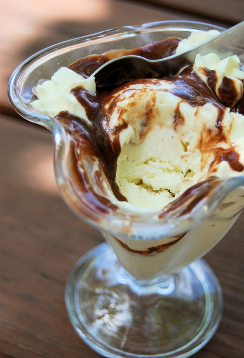

La Dame Blanche

Description
La dame blanche is a fun, simple, and easy dessert to make.
This is Belgium's classic dessert and is on most menus at restaurants in Belgium.
Ingredients
- Vanilla ice cream
- Hot fudge sauce
- Whipped cream
- Maraschino cherries
Instructions
- In a saucepan over medium-low heat, stir milk and chocolate together until chocolate is melted and sauce is thick and warm
- Do not let chocolate burn. Take off the heat and add the vanilla.
- Put 2 scoops of ice cream in a sundae dish. Serve the chocolate fudge sauce all around the ice cream.
- Put whipped cream on ice cream and top with a cherry.